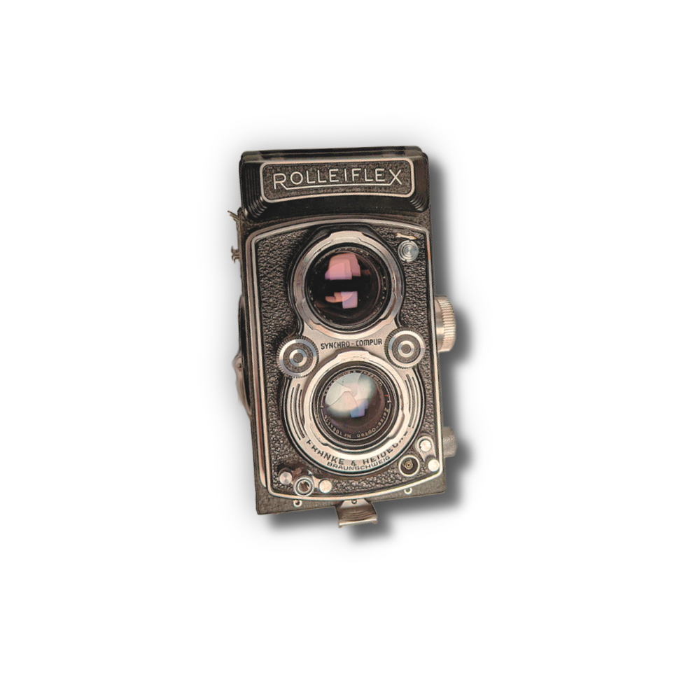

Fan Ho
Master of Photography
"I feel technique is not too important. It’s more important to use your eyes, mind and heart…"
-Fan Ho
About Him
About Him
Fan Ho (1931–2016) was a celebrated Chinese photographer, filmmaker, and actor, best known for his striking black-and-white images of Hong Kong in the 1950s and 60s. Using his Rolleiflex camera, he captured everyday street scenes with a masterful sense of light, shadow, and composition. His work blends documentary realism with poetic storytelling, turning ordinary moments into timeless art. Fan Ho’s photographs have won numerous international awards and continue to inspire photographers around the world today.
Format: 6×6 cm, 120 roll film (12 exposures) Taking lens: Zeiss Opton / Carl Zeiss Jena Tessar 75mm f/3.5 Viewing lens: Heidosmat 75mm f/2.8
Shutter: Synchro-Compur MX (leaf shutter), speeds from 1 sec to 1/500 sec + Bulb (“B”) Flash Sync: M + X sync sockets Production: 1951-1954, approx 109,000 units
Rolleiflex 3.5A (Type K4A)
Weight: ~970 grams
Dimensions: ~94 × 95 × 143 mm


Streets of Hong Kong